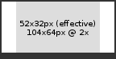

This recipe describes building an assessment app in Talent App Store.
An assessment is some interaction relating to a job application at some point during the recruitment process, for example:
To complete an assessment, any of these parties might get involved along the way:
See also:
As the vendors of the assessmenthub app, Aotal charges you, the developer, for every API call to POST /assessments/byID/{id}/appDetails, with a completed assessment.
Fees will be based on either an agreed % of your total subscription fees to customers, or an agreed % of your fees per completed assessment, and will be designed to fit in with your existing fee model. The minimum fee per completed assessment will be $US1.00. There are no charges for partial/incomplete assessments.
As for any app in Talent App Store, your app also pays for core API calls, as described at http://developer.talentappstore.com. These costs are low.
Lets look at assessments in action by installing some apps.
Note: when installing apps, the apps that have links are sandbox apps that you install via their install token - the other apps can be found publicly listed (find them with "Browse apps").
First, follow these instructions to install Developer ATS and create a job application. Then:
+----------------------
|
| +-----+ +----------------+
| | ats |<------->| assessment app |-+
| +-----+ +----------------+ |-+
| /\ +----------------+ |
| | +----------------+
| | /\
| | |
| \/ \/
| +------------------------+
| | assessment hub |
| +------------------------+
|
+--- (tenant) ---------
Your assessment app. Your app does the hard word of actually conducting the assessment. For example a basic numeracy testing assessment might guide the candidate through a series of web pages, each one asking them an arithmetic question, and then at the end calculate an overall score for them and update the assessment's status in the hub to complete.
The assessment hub app provides centralized assessment management and is separate from any single assessment app. The assessment hub app:
The applicant tracking system (ATS) app. The ATS:
The first API call incoming to your app is to tell you that a tenant has installed it.
Typically you might handle this API call by inserting into your customer table, sending an email to customer support team, etc. You might show the "setup required" icon and a settings page to facilitate this.
See installing and controlling setup and launch pages for more.
GET /assessmentTypes/forApp
Response:
In this example, your app is declaring that it supports a single assessment type, "MS Word proficiency".
Immediately after your app is installed, the assessment hub, a separate app, consumes GET /assessmentTypes/forApp on your app to ask for your assessment types.
If your app is completely "on demand" then you are ready to immediately return the list fo assessment types for this tenant.
Otherwise, if your app requires setup (e.g. you need to set up an account for the customer) before it can meaningfully offer any assessment types, then you should return an empty set of assessment types. Then, later on when your app's setup is complete, tell the assessment hub that you have new assessment types by consuming POST /assessmentTypes/forApp/deltaPings/1. In response the hub will consume GET /assessmentTypes/forApp on our app.
Apps can use different strategies for their assessment types:
This example shows a reusable assessment type. When your assessment type is marked as reusable, an assessment result on one job application is reused when the same candidate makes another job application within "daysExpired" - i.e the candidate only completes the assessment once.
For example, if the candidate has completed a medical check for one job, and then applies for another a few days later, we don't want them to be asked to complete the same check again. In this example, the assessment is reusable, and if the candidate completed the previous assessment within one year, then that previous result will be reused.
Most assessment types should be reusable. Before deciding that your assessment type should not be reusable, ask yourself "if a candidate completes my assessment and then a few minutes later they apply for another, identical job, does it make sense for them to complete the assessment again?".
POST /assessments/byID/{id}/tenantDeltaPings
Request:
At some point, an assessment for one of your assessment types will actually be started, e.g. when a recruiter selects it from a drop-down menu, or when it is automatically started as a result of a candidate dropping into a specific bucket.
This results in an assessment being created in the assessment hub.
The assessment hub then notifies your app by consuming your POST /assessments/byID/{id}/tenantDeltaPings endpoint.
Note that although the API doc. specifies a request body, currently no body is sent. You should assume that if the assessment does not already exist in your own database, then this is a new assessment, otherwise it is an update to an existing assessment.
You might do your own system's housekeeping for the new assessment, e.g. creating rows in your own tables, sending messages, etc.
In the future, your app may be informed via POST /assessments/byID/{id}/tenantDeltaPings that an assessment has been deleted (e.g. in response to a privacy response, or to conform to data retention laws). In response, your app should clean up data held its own database relating to the assessment.
Also in the future, your app may be informed that an assessment has been updated (e.g. in response to the tenant putting it on hold), in which case your app should stop whatever it is doing with the candidate.
GET /assessments/byID/{id}
Response:
Once your app learns that the customer has started an assessment, typically, you'll fetch the details of the assessment by consuming GET /assessments/byID/{id}.
The data you get back is mainly about the assessment itself (e.g. who raised it, if anyone), rather than the candidate. An important part of the response is the view key. You use the view key in the next step to fetch data about the candidate (enail, phone number, name etc.).
GET /applications/views/byKey/{key}
Response:
Many assessment apps will need specific details about the candidate, such as their CV, address, name, etc., and maybe more secure information such as salary, or customer-specific information such as "Suitability for warehouse roles". Your app gets these details from an application view.
You can learn about views here.
The assessment details that you fetched previously included a view key - pass that in to your call to GET /applications/views/byKey/{key} to fetch the correct view for this assessment.
Since the customer has complete control over the actual data you see in the view when your assessment is started, you need to be very clear in your documentation what data you require. For example, you might say in your app's description that you need job ID, candidate first name, last name and email, and recruiter email.
To do its work, your assessment may need information sourced from the candidate.
For some information, such as first name and last name, you can reasonably expect to find that inside the view. Its unlikely that the customer would run a recruitment process that didn't involve having the candidate's name.
For other information, such as the candidate's date of birth, the information might or might not have been captured in the recruitment process. You'll probably need to talk to the customer to establish whether the information is available in the view or not
For this kind of information, you can choose to either:
PATCH /assessments/byID/{id}/appDetails
Request:
In this example, your app updates the assessment's status to indicate it is underway, and sets the candidate interaction link to point to an online assessment.
Having been alerted to a new assessment, and having fetched all details for the assessment, your product can do its thing for the assessment.
At each stage of processing, your app should push the assessment's state up into the assessment hub by consuming POST /assessments/byID/{}/appDetails.
The assessment's state includes:
An assessment can be in any of these statuses. There are 2 statues that can be set by the hub, and 4 statuses that can be set by your app.
Some statues are final, i.e. once the assessment is in this state, it will never leave it again.
| Status | Set by | When |
| Started | Hub | When the assessment is first started, or when the customer restarts an assessment that was in the "Error" state (hopefully after fixing the cause of the error). |
| In progress | App | When the app learns about the recently started assessment (via incoming API call). |
| Cancelled (final) | Hub | When the customer wants to halt the assessment (e.g. candidate has been declined). |
| Complete (final) | App | When the assessment is complete, and the result is available. |
| Opted out (final) | App | When for some reason (e.g. technical difficulty, refusal) the candidate cannot/will not complete the assessment. |
| Error | App | When for some reason beyond the power of the app to fix, e.g. missing data fields in the view, the assessment cannot be progressed. |
Below are some typical scenarios:
| Scenario | Status transitions |
|
Started -> In progress -> Complete |
|
Started -> Error -> Started -> In progress -> Complete |
|
Started -> In progress -> Opted out |
|
Started -> In progress -> Cancelled |
Once the candidate has completed the online process hosted at your app, your app pushes the results, with the updated status.
In this example, the assessment is now complete. It could also have been that the app was just posting interim results.
The assessment's image appears in the assessment strip, which in turn is usually embedded in the ATS alongside the other applicant details (name, email etc.). Setting the image is a good way for you to help the user understand the results from your assessment at a glance, without needing to drill in (unless they choose to). This is useful in the tightly packed screens in a typical ATS, which show many applicants and many assessments on a single page.
You can simply serve up a static image, or generate your images dynamically, e.,g. passing in the candidate's score as a URL parameter. For an example of this, see this demo dynamic image generator for assessment apps, written in node.js.
Users will appreciate an image which is a great visual representation of your assessment:
The status image should be suitable for displaying at an effective resolution of 52x32. Ideally your image should be 2x this to cater for high density displays (Retina Macbooks etc).

You should set the candidate interaction uri when you want to link the candidate to something (e.g. to have them complete a quiz).
If your assessment type was marked as appCommunicatesDirectlyToCandidate == false, then whenever you change the candidate interaction uri (including the first time you set it), the hub will send an email to the candidate with the new link in it. If you don't want this (i.e. your app sends its own emails to the candidate), then you should set appCommunicatesDirectlyToCandidate to true. This will prevent the candidate also receiving emails from the hub.
Whether your assessment type sets appCommunicatesDirectlyToCandidate to true or false, its still a good idea to set the candidate interaction uri if you have a sensible destination for the candidate.
For this example, let's assume that your app does its thing by having the candidate complete an online assessment. Below, it updates the assessment's status to indicate it is underway, and sets the candidate interaction link.
POST /assessments/byID/{}/appDetails
You can optionally protect your web pages with TAS SSO, using principal type of candidate. This protects against the link falling into the hands of someone other than the candidate, and means the candidate enjoys a seamless experience as they navigate into your app.
If you do use SSO, you should probably perform a sanity check that the candidate who logs in matches the one the assessment is for.
You should set the user interaction uri and/or message when you want to convey or display something to the user (i.e. someone looking at a list of applicants, and seeing your assessment there).
Note: this functionality is not yet live in the assessment hub. Stay tuned.
The message is an easy and quick way to display an error message, a link to your ractual results (e.g. in pdf format), or just a short message about the assessment.
The message is treated as markdown format, and you can include links (these will open in a new tab/window).
The uri allows you to provide a complete web page. This might show:
When userInteractionUrl is set, your app's web page is rendered within an iframe in the popup over the assessment strip (i.e. within the ATS pages).
The iframe has a minimum width of 380px by default, and a maximum width of 960px. If no height is supplied the browser will default to 150px.
You can update the dimensions of the iframe displayed in the popup, to make it best fit your content, with something like this:
var messageJson = {
action: 'updateIframe',
css: {
height: document.body.clientHeight + 'px',
width: '960px'
}
};
window.parent.postMessage(messageJson, '*');
This technique can only be used to adjust width/height values. Any other CSS passed will be ignored (e.g. border).
The following problems may cause a blank iframe inside the assessment popup.
GET /candidates/me/homePage
Response:
Finally, after your app has done its thing and completed the assessment, it should redirect the candidate's browser to the candidate "home page", served by some other app. Their home page might direct them to the next assessment they need to complete, or otherwise keep them updated.
POST /assessmentTypes/forApp/deltaPings/1
From time to time, your app may introduce new assessment types, e.g.:
When this happens, you need to consume POST /assessmentTypes/forApp/deltaPings/1.
This API is produced by the assessment hub. The assessment hub will then consume GET /asessmentTypes/forApp on your app, to load your newly updated set of assessment types.